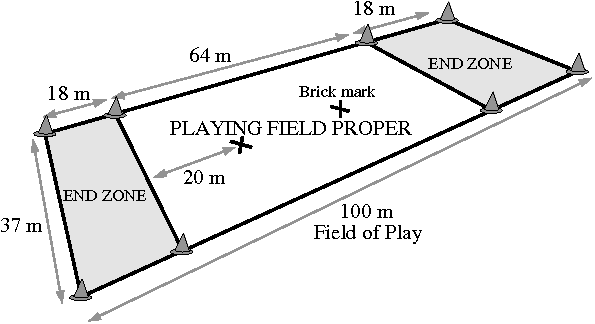

Each team is going to have six players max and four players min. If the team is co-rec (has both male and female players), there should be two men two feamle min.
Playing Fields:
The playing field will be 70 years long and approximately 40 yards wide. They should also have two end zones where you will score.
Time:
The game last for 36 mins and is divided into 18 mins halves. Half-time is five mins. The clock runs continuously until the last minute of each half, when it will stop every goal, foul, time-outs, injuries and when the disk goes out of bounce.
End Zone:
Any time a team gains possession in the end zone which they are defending, the player immediately
chooses to resume play where the disc is stopped, or at the goal line. A player may carry the disc up to
the goal line provided he/she approaches it perpendicularly. The disc may not be passed as the player
approaches the line. If a team gains possession in the end zone which it is attacking, the disc is carried
perpendicularly to the goal line, and play resumes immediately from the goal line.
When you are holding the Frisbee, you must not take any steps. If the player takes a step to stop their body, this should be considered at the discression of the ref.
When the player has the disk, they can pivot on the foot. If the pivot foot is changed, a foul should be called.
